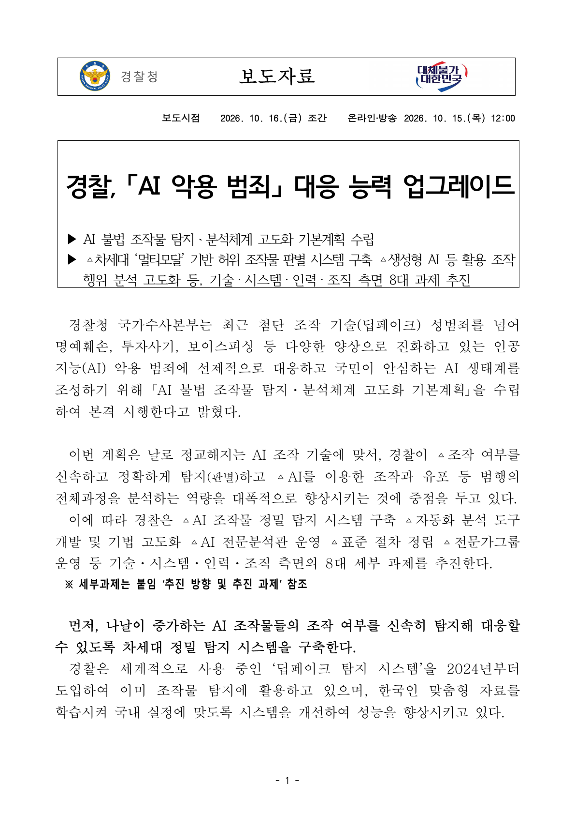
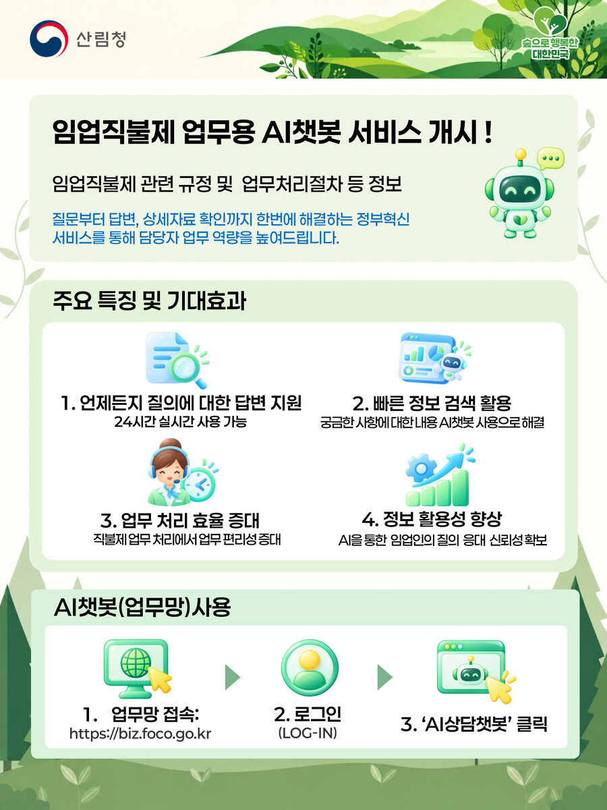
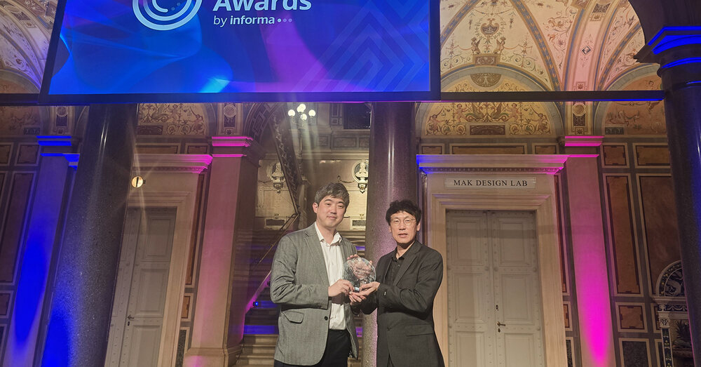
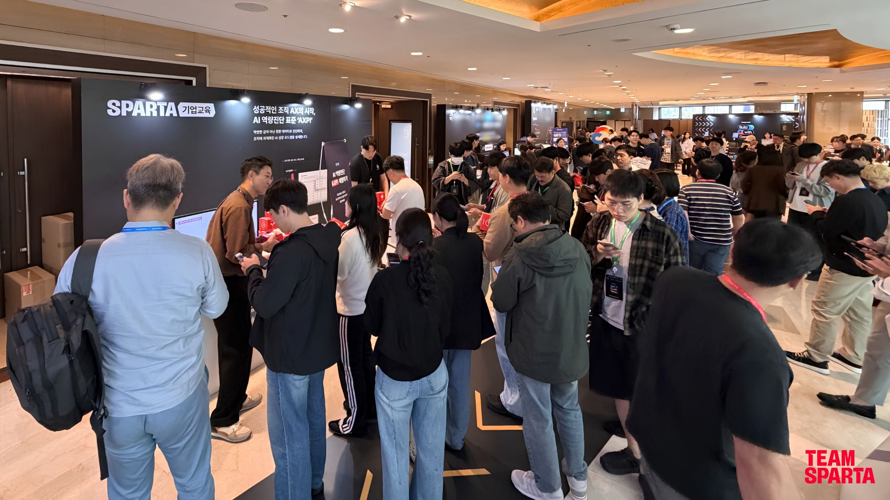
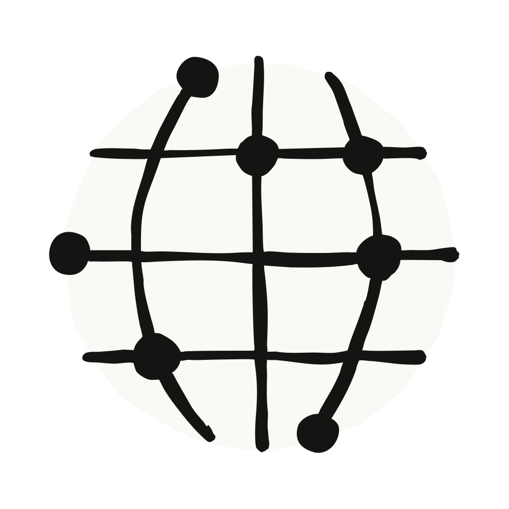

01 · KR
경찰 AI 범죄 대응
AI 범죄를 탐지·분석·추적하는 수사 체계로 확장하다
경찰청은 AI 불법 조작물 정밀 탐지와 범행 과정 분석을 위한 기본계획을 수립했다. 영상·음성·문자를 함께 보는 멀티모달 탐지, AI 전문분석관, 표준 절차 등 8대 과제를 추진한다.
원문 보기 ↗ADDIT INSIGHT
안전한 AI는 필터 하나가 아니라 탐지·분석·인력·절차의 운영체계다.
안전·공공서비스·업무·인프라까지 AI 도입의 기준이 달라지고 있습니다.
AI는 도입보다 연결 방식이 중요해지는 단계로 들어섰습니다.
AI는 기능에서 공공·업무·생활 인프라로 내려온다.
모델 가격 하락과 MCP 연결이 실제 도입 비용을 낮춘다.
AI 안전은 탐지·추적·사람 검토 체계로 확장된다.
사용자 신뢰가 무너지면 서비스와 기업가치가 함께 흔들린다.
AI 투자 리스크의 중심이 모델에서 인프라·신용으로 이동한다.

AI 범죄를 탐지·분석·추적하는 수사 체계로 확장하다
경찰청은 AI 불법 조작물 정밀 탐지와 범행 과정 분석을 위한 기본계획을 수립했다. 영상·음성·문자를 함께 보는 멀티모달 탐지, AI 전문분석관, 표준 절차 등 8대 과제를 추진한다.
원문 보기 ↗안전한 AI는 필터 하나가 아니라 탐지·분석·인력·절차의 운영체계다.

현장 질문에 근거 문서까지 연결하는 업무형 챗봇을 만들다
산림청은 10월 15일부터 임업직불제 업무용 AI 챗봇을 정식 운영한다. 질문에 답하면서 참고 문서와 유사 질의·회신 사례를 함께 보여주고, 업무지원시스템 안에서 바로 이용하게 했다.
원문 보기 ↗공공 AI의 신뢰는 답변 속도보다 근거와 업무 맥락을 함께 보여주는 데서 생긴다.

통신망을 센서·판단·제어가 이어지는 현장 인프라로 전환하다
SKT는 AI-RAN 기반 완성차 무인 자율 이송으로 Network X 어워드의 혁신적인 5G 서비스 부문을 수상했다. 라이다 데이터로 디지털 트윈을 만들고, 경로 계산과 주행 명령까지 연결해 일반 차량의 무인 이송을 실증했다.
원문 보기 ↗피지컬 AI의 경쟁력은 모델보다 센서 데이터와 현장 제어 루프에 있다.

도구 도입 전에 조직의 AI 활용 수준부터 진단하다
팀스파르타는 Google Cloud의 Build with Gemini Seoul에서 AI 역량 진단 도구 AXPI 체험존을 운영했다. AXPI는 기업과 구성원의 AI 활용 수준을 진단하며, 누적 진단 인원은 3만 명을 넘어섰다고 보도됐다.
원문 보기 ↗AX 전환은 새 도구를 사는 일보다 현재 역량과 직무별 격차를 먼저 측정하는 일이다.

지역 확장과 정부 협력으로 안전한 도입의 현장성을 높이다
Anthropic은 싱가포르에 아시아·태평양 다섯 번째 사무소를 열고 정부와 AI 안전·평가·책임 있는 도입을 위한 MOU를 체결했다. 공식 발표는 싱가포르가 인구 대비 Claude 사용량 121개국 중 2위이며 GovTech·Grab·DBS 등이 활용 중이라고 설명한다.
원문 보기 ↗글로벌 AI 확장은 모델 판매가 아니라 현지 파트너·평가·안전 체계를 함께 구축하는 일이다.